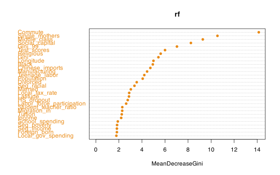

19 Bagging and random forests
Stat 406
Geoff Pleiss, Trevor Campbell
Last modified – 11 October 2023
\[
\DeclareMathOperator*{\argmin}{argmin}
\DeclareMathOperator*{\argmax}{argmax}
\DeclareMathOperator*{\minimize}{minimize}
\DeclareMathOperator*{\maximize}{maximize}
\DeclareMathOperator*{\find}{find}
\DeclareMathOperator{\st}{subject\,\,to}
\newcommand{\E}{E}
\newcommand{\Expect}[1]{\E\left[ #1 \right]}
\newcommand{\Var}[1]{\mathrm{Var}\left[ #1 \right]}
\newcommand{\Cov}[2]{\mathrm{Cov}\left[#1,\ #2\right]}
\newcommand{\given}{\ \vert\ }
\newcommand{\X}{\mathbf{X}}
\newcommand{\x}{\mathbf{x}}
\newcommand{\y}{\mathbf{y}}
\newcommand{\P}{\mathcal{P}}
\newcommand{\R}{\mathbb{R}}
\newcommand{\norm}[1]{\left\lVert #1 \right\rVert}
\newcommand{\snorm}[1]{\lVert #1 \rVert}
\newcommand{\tr}[1]{\mbox{tr}(#1)}
\newcommand{\brt}{\widehat{\beta}^R_{s}}
\newcommand{\brl}{\widehat{\beta}^R_{\lambda}}
\newcommand{\bls}{\widehat{\beta}_{ols}}
\newcommand{\blt}{\widehat{\beta}^L_{s}}
\newcommand{\bll}{\widehat{\beta}^L_{\lambda}}
\]
Bagging
Many methods (trees, nonparametric smoothers) tend to have low bias but high variance .
Especially fully grown trees (that’s why we prune them)
High-variance
if we split the training data into two parts at random and fit a decision tree to each part, the results will be quite different.
In contrast, a low variance estimator
would yield similar results if applied to the two parts (consider \(\widehat{f} = 0\) ).
Bagging , short for bootstrap aggregation , is a general purpose procedure for reducing variance.
We’ll use it specifically in the context of trees, but it can be applied much more broadly.
Bagging: The heuristic motivation
Suppose we have \(n\) uncorrelated observations \(Z_1, \ldots, Z_n\) , each with variance \(\sigma^2\) .
What is the variance of
\[\overline{Z} = \frac{1}{n} \sum_{i=1}^n Z_i\ \ \ ?\]
Suppose we had \(B\) separate (uncorrelated) training sets, \(1, \ldots, B\) ,
We can form \(B\) separate model fits, \(\widehat{f}^1(x), \ldots, \widehat{f}^B(x)\) , and then average them:
\[\widehat{f}_{B}(x) = \frac{1}{B} \sum_{b=1}^B \widehat{f}^b(x)\]
Bagging: The bootstrap part
This isn’t practical
we don’t have many training sets.
We therefore turn to the bootstrap to simulate having many training sets.
Suppose we have data \(Z_1, \ldots, Z_n\)
Choose some large number of samples, \(B\) .
For each \(b = 1,\ldots,B\) , resample from \(Z_1, \ldots, Z_n\) , call it \(\widetilde{Z}_1, \ldots, \widetilde{Z}_n\) .
Compute \(\widehat{f}^b = \widehat{f}(\widetilde{Z}_1, \ldots, \widetilde{Z}_n)\) .
\[\widehat{f}_{\textrm{bag}}(x) = \frac{1}{B} \sum_{b=1}^B \widehat{f}^b(x)\]
This process is known as Bagging
Bagging trees
The procedure for trees is the following
Choose a large number \(B\) .
For each \(b = 1,\ldots, B\) , grow an unpruned tree on the \(b^{th}\) bootstrap draw from the data.
Average all these trees together.
Bagging trees
Each tree, since it is unpruned, will have
low / high variance
low / high bias
Therefore averaging many trees results in an estimator that has
Bagging trees: Variable importance measures
Bagging can dramatically improve predictive performance of trees
But we sacrificed some interpretability .
We no longer have that nice diagram that shows the segmentation of the predictor space
(more accurately, we have \(B\) of them).
To recover some information, we can do the following:
For each of the \(b\) trees and each of the \(p\) variables, we record the amount that the Gini index is reduced by the addition of that variable
Report the average reduction over all \(B\) trees.
Random Forest
Random Forest is an extension of Bagging, in which the bootstrap trees are decorrelated .
Remember: \(\Var{\overline{Z}} = \frac{1}{n}\Var{Z_1}\) unless the \(Z_i\) ’s are correlated
So Bagging may not reduce the variance that much because the training sets are correlated across trees.
How do we decorrelate?
Draw a bootstrap sample and start to build a tree.
But
Before we split, we randomly pick
\(m\) of the possible \(p\) predictors as candidates for the split.
Decorrelating
A new sample of size \(m\) of the predictors is taken at each split .
Usually, we use about \(m = \sqrt{p}\)
In other words, at each split, we aren’t even allowed to consider the majority of possible predictors!
What is going on here?
Suppose there is 1 really strong predictor and many mediocre ones.
Then each tree will have this one predictor in it,
Therefore, each tree will look very similar (i.e. highly correlated).
Averaging highly correlated things leads to much less variance reduction than if they were uncorrelated.
If we don’t allow some trees/splits to use this important variable, each of the trees will be much less similar and hence much less correlated.
Bagging Trees is Random Forest when \(m = p\) , that is, when we can consider all the variables at each split.
Example with Mobility data
library (randomForest)library (kableExtra)set.seed (406406 )<- Stat406:: mobility |> mutate (mobile = as.factor (Mobility > .1 )) |> select (- ID, - Name, - Mobility, - State) |> drop_na ()<- nrow (mob)<- sample.int (n, floor (n * .75 ))<- setdiff (1 : n, trainidx)<- mob[trainidx, ]<- mob[testidx, ]<- randomForest (mobile ~ ., data = train)<- randomForest (mobile ~ ., data = train, mtry = ncol (mob) - 1 )<- tibble (truth = test$ mobile, rf = predict (rf, test), bag = predict (bag, test))kbl (cbind (table (preds$ truth, preds$ rf), table (preds$ truth, preds$ bag))) |> add_header_above (c ("Truth" = 1 , "RF" = 2 , "Bagging" = 2 ))
FALSE
TRUE
FALSE
TRUE
FALSE
61
10
60
11
TRUE
12
22
10
24
Example with Mobility data
varImpPlot (rf, pch = 16 , col = orange)

One last thing…
On average
drawing \(n\) samples from \(n\) observations with replacement (bootstrapping) results in ~ 2/3 of the observations being selected. (Can you show this?)
The remaining ~ 1/3 of the observations are not used on that tree .
These are referred to as out-of-bag (OOB) .
We can think of it as a for-free cross-validation .
Each time a tree is grown, we get its prediction error on the unused observations.
We average this over all bootstrap samples.
Out-of-bag error estimation for bagging / RF
For randomForest(), predict() without passing newdata = gives the OOB prediction
not like lm() where it gives the fitted values
<- table (predict (bag), train$ mobile) kbl (tab) |> add_header_above (c ("Truth" = 1 , "Bagging" = 2 ))
FALSE
TRUE
FALSE
182
28
TRUE
21
82
1 - sum (diag (tab)) / sum (tab) ## OOB misclassification error, no need for CV